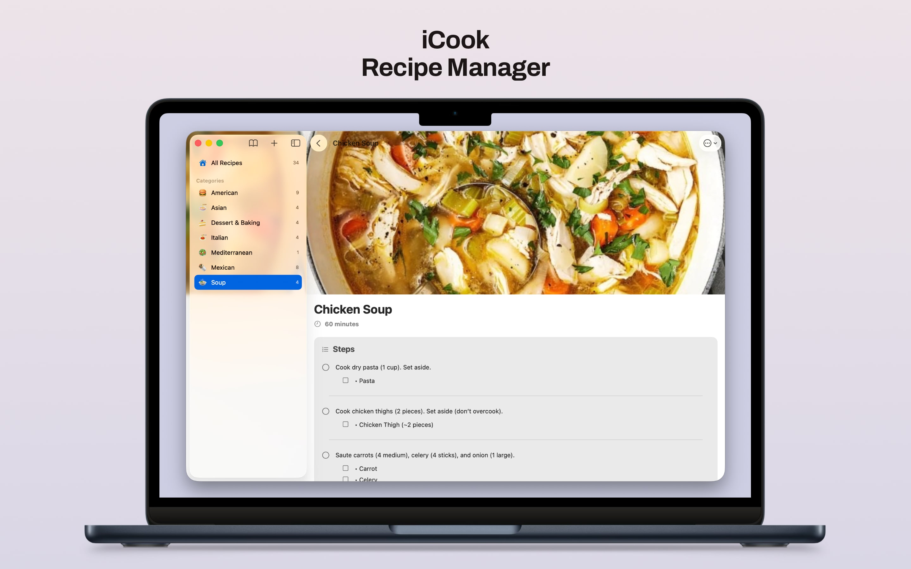
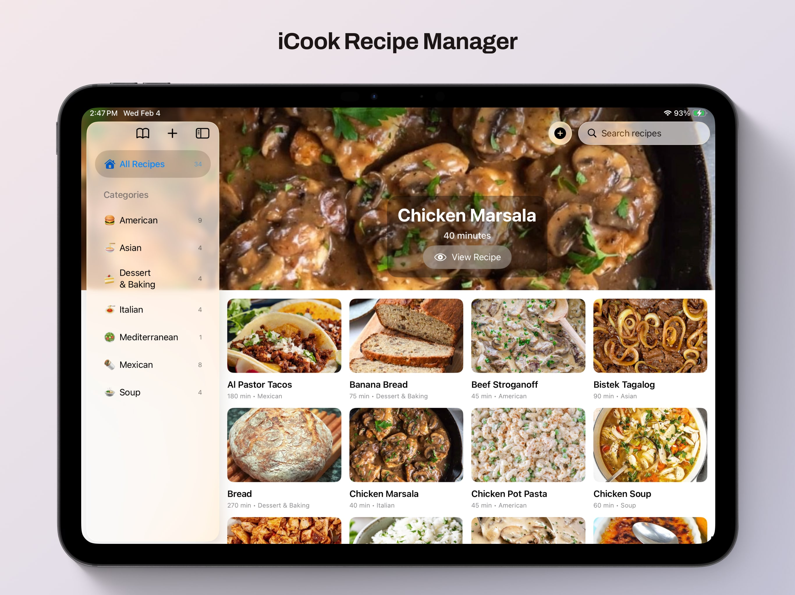
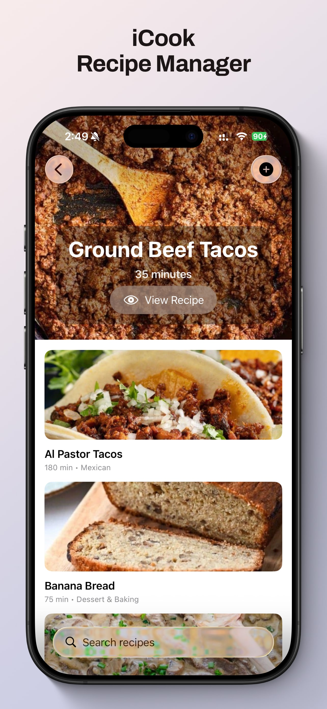
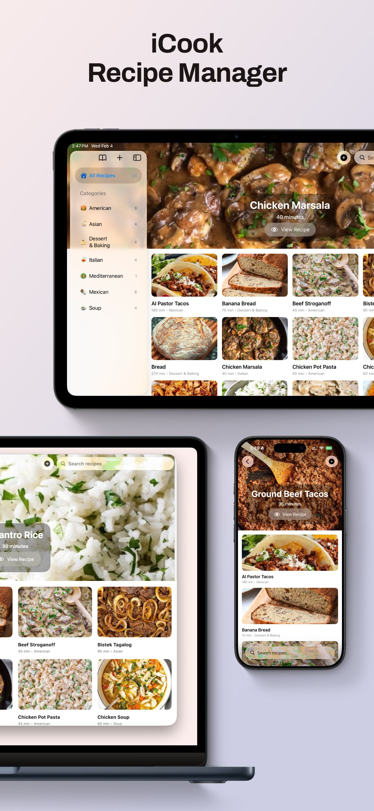
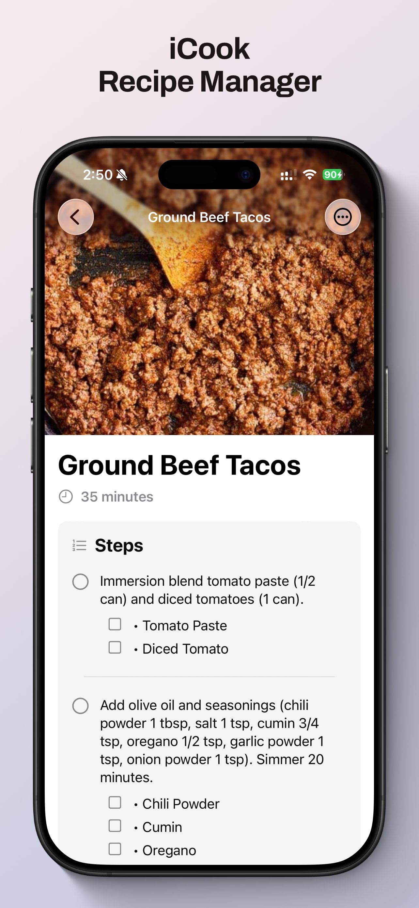
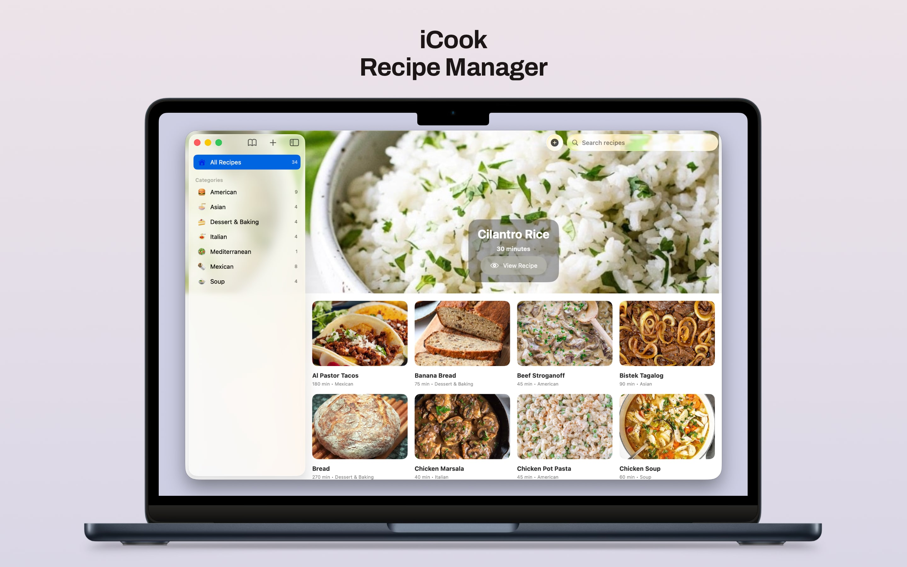
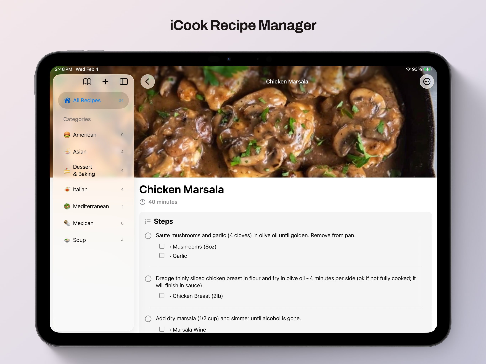

Collections that feel like recipe books
Create separate collections for home cooking, holidays, meal prep, or anything else you want to keep distinct.
Recipe Manager for Apple devices
iCook helps you collect recipes, sort them into collections, tag what matters, and cook from the same library across iPhone, iPad, and Mac.



Designed for people who want a straightforward recipe library: your own collections, your own categories, your own tags, and your own data in iCloud.
Features
Create separate collections for home cooking, holidays, meal prep, or anything else you want to keep distinct.
Browse by category, filter by tags, and keep your sidebar useful as your recipe library grows.
Add time, notes, ingredients, steps, and photos so the recipe is ready when you are.
Connect recipes to other recipes for sauces, fillings, sides, or any prep you reuse often.
Invite family or friends to collaborate on a collection and keep everyone on the same version.
Bring recipes in, preserve tags and links, and export readable data when you need a backup or handoff.
Built for everyday use
iCook stays out of the way. There are no ads, no tracking, and no clutter around the recipe itself. Open the app, find what you need, and get back to cooking.



Platforms
Your recipes sync through iCloud, so the same library is available across your Apple devices. Start on one screen, keep cooking on another.
Recipes and collections stay up to date across devices.
Accept and manage shared collections on iOS and macOS.
Your data lives in your iCloud account, not on third-party servers.

Learn more
If you publish this site with GitHub Pages, the support and privacy pages are already included alongside it.